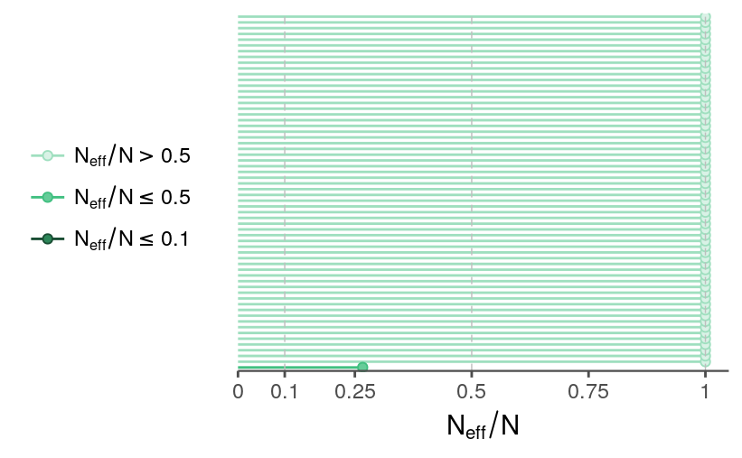

Evaluation of a simple single-year team ability model
Single-year estimation of team ability
Eventually I want to estimate the association between a team having jet lag and some measure of their tendency to win a game. As a starting point, I remembered that Andrew Gelman had some posts on estimating the ability of teams in the World Cup teams. The response in that model is the score differential: goals in that case, runs my case. As Gelman discusses, this isn’t a generative model because it makes continuous predictions for discrete data, but it may be good enough for my purposes.
Below is a model that closely follows the World Cup model.
data {
int<lower=1> n_games;
int<lower=1> n_teams;
int<lower=1,upper=n_teams> team_home[n_games];
int<lower=1,upper=n_teams> team_away[n_games];
vector[n_games] rundiff;
real df;
}
parameters {
real<lower=0> sigma_a;
real<lower=0> sigma_y;
vector[n_teams] a_std;
}
transformed parameters {
vector[n_teams] a;
a = sigma_a * a_std;
}
model {
a_std ~ normal(0, 1);
sigma_y ~ normal(0, 6);
sigma_a ~ normal(0, 3);
for (i in 1:n_games)
rundiff[i] ~ student_t(df, a[team_home[i]] - a[team_away[i]], sigma_y);
}There are two main differences from the World Cup model:
I haven’t yet bothered to put the response (difference in runs) on the square-root scale.
I don’t include a prior estimate for a team’s ability.
And while I’m labeling one team as “home” and one as “away”, the model isn’t treating them any differently (e.g., I haven’t yet tried to add a parameter for home-field advantage).
MCMC diagnostics
I’ve fit this model using data for the 2011 season. I’ll look at a few diagnostic plots using the bayesplot package.
fit <- readRDS("../outputs/models/rundiff-oneseason_2011-fit.rds")The R-hats and effective sample sizes look OK, though the effective sample size for \(\sigma_a\) is relatively low.
selpars <- c("sigma_a", "sigma_y", grep("^a", names(fit), value = TRUE))mcmc_neff(neff_ratio(fit, pars = selpars)) +
theme_remove_axis("y") +
theme(legend.position = "left")
mcmc_rhat(rhat(fit, pars = selpars)) +
legend_text(hjust = 0) +
theme_remove_axis("y") +
theme(legend.text.align = 0)
samps_flat <- as.array(fit)The autocorrelation across iterations looks OK. As expected from its lower effective sample size ratio, \(\sigma_a\) shows a higher autocorrelation than other parameters do.
mcmc_acf(samps_flat, regex_pars = "sigma")mcmc_acf(samps_flat, pars = paste0("a[", 1:6, "]"))
The traces look OK.
color_scheme_set("mix-darkgray-green")
mcmc_trace(samps_flat, regex_pars = "sigma")mcmc_trace(samps_flat, regex_pars = "^a\\[", facet_args = list(ncol = 5)) +
theme(legend.position = "none",
axis.text.x = element_blank(),
axis.ticks.x = element_blank())Ability estimates
The order of team ability estimates should largely follow the final rankings for the 2011 season.
glog <- read_csv("../outputs/lag/log-with-lags-cleaned.csv")(team_rank <- glog %>%
filter(lubridate::year(date) == 2011) %>%
count_wins() %>%
mutate(win_perc = n_wins / n_games) %>%
arrange(desc(win_perc)))
#> # A tibble: 30 x 4
#> team n_wins n_games win_perc
#> <chr> <int> <int> <dbl>
#> 1 PHI 102 162 0.630
#> 2 NYA 97 162 0.599
#> 3 MIL 96 162 0.593
#> 4 TEX 96 162 0.593
#> 5 DET 95 162 0.586
#> 6 ARI 94 162 0.580
#> 7 TBA 91 162 0.562
#> 8 BOS 90 162 0.556
#> 9 SLN 90 162 0.556
#> 10 ATL 89 162 0.549
#> # ... with 20 more rows
team_names <- levels(factor(team_rank$team))To get the samples in a more convenient form, I’ll re-extract the samples from the fit as a list rather than an array with flattened variables name.
samps <- rstan::extract(fit)avals <- trace_intervals(samps$a, "team_idx") %>%
mutate(team = factor(team_names[team_idx], levels = team_rank$team))ggplot(avals, aes(x = fct_rev(team))) +
geom_hline(yintercept = 0, color = tc$background_light, size = 1) +
geom_pointrange(aes(y = mean, ymin = p10, ymax = p90)) +
geom_linerange(aes(ymin = p25, ymax = p75), size = 0.9) +
labs(x = NULL,
y = "mean ability (with 50% and 80% intervals)",
title = "Team ability estimates for 2011 season",
subtitle = "sorted by regular season standings") +
coord_flip() +
theme_remove_axis("y", text = FALSE)The intervals are wide and largely overlapping, but the ability estimates seem to approximately track the season standings. I don’t expect a one-to-one mapping here because the overall win percentages don’t account for actual match-ups or run differentials.
Posterior predictive check
To generate new responses from the estimated parameters, I’ll pick a few teams to form the match-ups. The first three are the teams with the best 2011 records, the last three are the ones with the worst records, and the middle teams are somewhere in between.
ppc_team_names <- c("PHI", "NYA", "MIL", "ARI", "CIN", "OAK", "PIT",
"SEA", "MIN", "HOU")
ppc_teams <- match(ppc_team_names, team_names)
matchups <- data.frame(t(utils::combn(ppc_teams, 2)))
names(matchups) <- c("home", "away")
matchups$home_name <- team_names[matchups$home]
matchups$away_name <- team_names[matchups$away]For each of these match-ups, I’ll generate a score differential from samples for each iteration and then summarize the response across the iterations by constructing the 95% intervals for each match-up.
df <- 7
n_games <- nrow(matchups)
n_iter <- nrow(samps$sigma_y)
rundiff_sim <- array(NA, c(n_iter, n_games))
set.seed(16125)
for (i in 1:n_iter){
rundiff_sim[i,] <- samps$a[i, matchups$home] - samps$a[i, matchups$away] +
rt(n_games, df) * samps$sigma_y[i]
}
result <- cbind(matchups, trace_intervals(rundiff_sim, "game_idx")) %>%
as_tibble() %>%
mutate(matchup = paste(home_name, "-", away_name),
matchup = factor(matchup, levels = matchup))I also have to pull together the observed run differentials for these match-ups. This requires a little bit of work because the simulations put the team with the better record as the “home” team.
observed <- glog %>%
filter(lubridate::year(date) == 2011,
home_team %in% team_names,
away_team %in% team_names) %>%
select(home_team, away_team, home_runs_scored, away_runs_scored) %>%
mutate(flip = match(home_team, team_names) > match(away_team, team_names),
matchup = ifelse(flip,
paste(away_team, "-", home_team),
paste(home_team, "-", away_team)),
matchup = factor(matchup, levels = levels(result$matchup)),
rundiff = ifelse(flip,
away_runs_scored - home_runs_scored,
home_runs_scored - away_runs_scored)) %>%
filter(!is.na(matchup))Now, we can overlay the observed run differentials over the prediction intervals. The intervals aren’t shown if the match-up didn’t occur during the 2011 season.
result %>%
filter(matchup %in% observed$matchup) %>%
ggplot() +
geom_hline(yintercept = 0, color = tc$primary_lighter) +
geom_linerange(aes(x = fct_rev(matchup), ymin = p2.5, ymax = p97.5),
alpha = 0.8) +
geom_point(aes(x = matchup, y = rundiff),
fill = NA, color = tc$background_dark, shape = 21,
data = observed) +
scale_y_continuous(limits = c(-13, 13),
minor_breaks = -13:13) +
coord_flip() +
labs(title = "Run differential",
subtitle = "compared to the match-up's 95% predictive interval",
x = NULL, y = NULL) +
theme_remove_axis("y", text = FALSE) +
theme(axis.text.y = element_text(hjust = 0))Well, that seems OK in the sense that 115 of the 122 points (close to 95%) fall within the intervals.
Is this model useful going forward? I don’t know. If making predictions from this model were the goal, the intervals are unhelpfully large. (“Oh, that team’s likely to win by 9 or lose by 7? You don’t say.”) And these wide intervals are unsurprising given that the response is based on a single-season ability estimate for each team.
Instead, my goal is to find a relatively interpretable model that I can extend to estimate the association of jet lag with a team’s success in a game. In that case, the uncertainty of the team-to-team match-up seems like a good thing to build on.
In order to do that, here are the next steps I’m considering:
Introduce terms for different lag effects.
Extend the model to handle multiple years.
Add a term for a home-team effect.
See how the model looks when run differential is put on the square-root scale.
Break up the ability estimates across the season, similar to Milad Kharratzadeh’s model of goal differentials in the English Premier League.